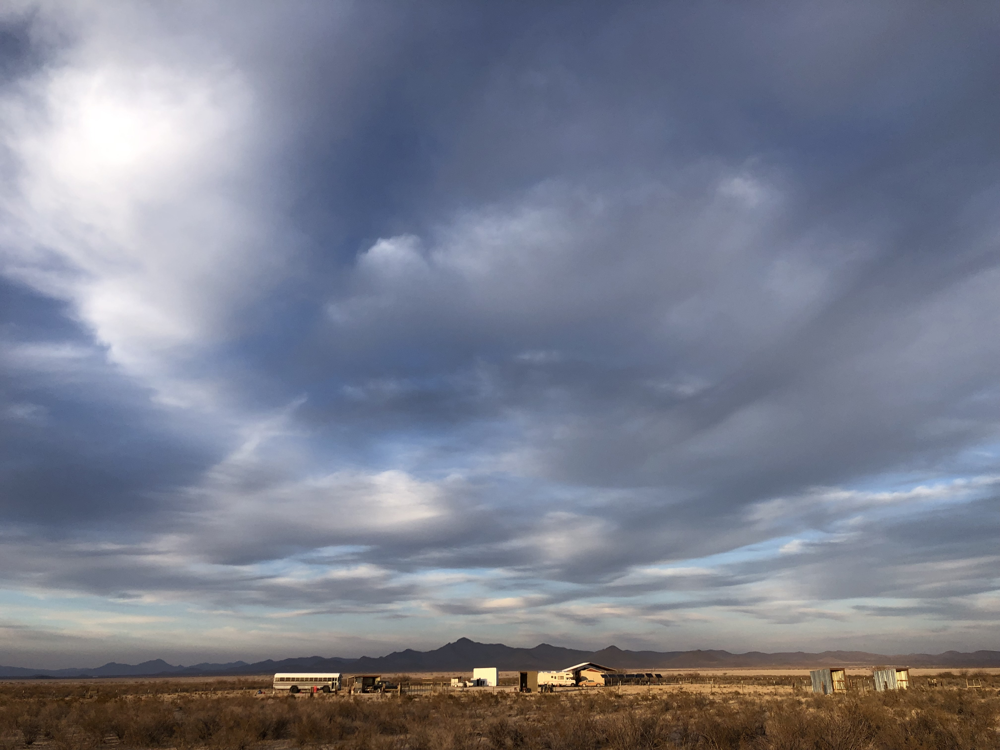

We welcome feedback to help us keep D.U.S.T. sustainable and evolving. This could become an annual or semi-annual event. LET US KNOW WHAT YOU THINK! Please fill out this form.
D.U.S.T. is a free event. Donations help cover basic costs.
Individual artist links and QR codes will be available onsite & on the schedule.
We appreciate help on the day before and during the event. Please email us at dustlobo@gmail.com if you'd like to volunteer a few hours.
